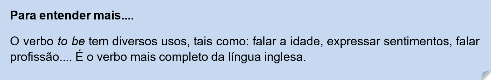
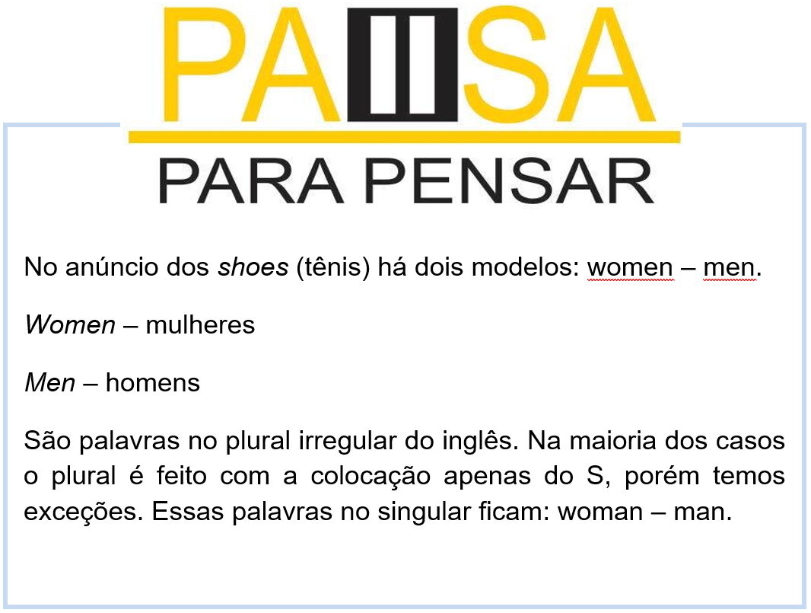
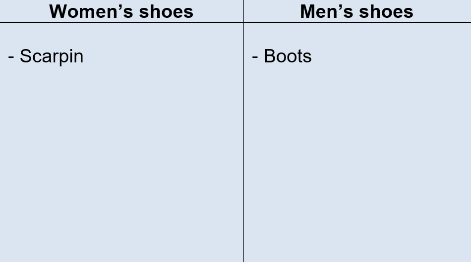

Capítulo 2 - Footwear Sector – Setor Calçadista
Em inglês, existe o problema de aprendermos palavras genéricas demais e deixarmos de lado combinações e detalhes. Isso acontece com o tema que vamos aprender nessa unidade: SHOES (sapatos).
Algumas vezes falamos “Where are my shoes?” (onde estão meus sapatos?) ou, então, “I need shoes” (preciso de sapatos). A palavra “shoe” em si aparece sozinha, sem nenhuma combinação específica. Observe nossa propaganda. O que você consegue compreender?
Neste anúncio vamos explorar algumas estruturas do inglês, como plural dos substantivos, pronomes pessoais, vocabulário de calçados e presente simples do verbo to be. Let’s go learn more!
Shoes vocabulary - Vocabulário calçadista
Vamos ampliar nosso vocabulário sobre calçados, observe nosso dicionário ilustrado.
Grammar - Estudos gramaticais
No nosso anúncio temos o verbo WEAR. Que tem sentido vestir/usar tudo que toca nosso corpo. E temos outro verbo que usamos para descrever uso de acessório que é o USE. Então:
I wear jacket. (Eu uso jaqueta.)
I use earings. (Eu uso brincos.)
Observe que nas frases acima usamos o pronome pessoal I (eu), vamos relembrar nossos pronomes pessoais.
Toda a frase em inglês deve ter um sujeito, em geral esse sujeito é um pronome pessoal.
Observe:
We are teachers. Nós somos professores.
I am a teacher. Eu sou um(a) professor(a).

Agora vamos ver o principal verbo da língua inglesa, o verbo to be – ser/estar.
Observe a estrutura:


O que aprendi
• Nessa unidade aprendemos o vocabulário calçadista;
• Aprendemos a classificar os sapatos em femininos e masculinos;
• Observamos as diferenças entre os verbos wear e use;
• Vimos que as frases em inglês devem sempre ter um sujeito que geralmente são os pronomes pessoais, personal pronouns;
• Aprendemos a construir pequenas frases de escrita pessoal com profissões, Jobs;
• Verificamos que o verbo to be é o mais usado na língua inglesa.
Biblioteca
O site https://www.linguee.com.br/ é excelente para buscar palavras novas e praticar a pronuncia. Além do site, é oferecido também o aplicativo do dicionário para celulares.

Praticando
Observe nosso dicionário e complete nossa tabela.
Classifique os shoes(sapatos) em: women (mulheres) e men(homens)
Jobs - Profissões
Babysitter – babá
Baker – padeiro
Barber – barbeiro
Beautician – esteticista
Blacksmith – ferreiro
Bricklayer – pedreiro
Butcher – açougueiro
Carpenter – carpinteiro
Cashier – caixa
Chef – cozinheiro
Cobbler – sapateiro
Driver – motorista
Fisherman – pescador
Garbage collector – lixeiro
Gardener – jardineiro
Hairdresser – cabeleireiro
Janitor – zelador
Make-up artist – maquiador
Manicure – manicure
Mechanical – mecânico
Milkman – leiteiro
Musician – músico
Painter – pintor
Photographer – fotógrafo
Plumber – encanador
Policeman – policial
Porter – porteiro
Postman – carteiro
Salesperson – vendedor
Seamstress – costureira
Secretary – secretária
Taxi driver – taxist

Let’s thinking – vamos pensar Cada situação exige uma roupa e um sapato adequado. Complete a frase com a sua profissão em inglês e o sapato que você usa para trabalhar. Depois os sapatos que utiliza em outras situações. I am a/an ______________(profissão) I wear _________________(sapato) At home, (em casa) __________________________ Practicing sports,(praticando esportes) __________________________